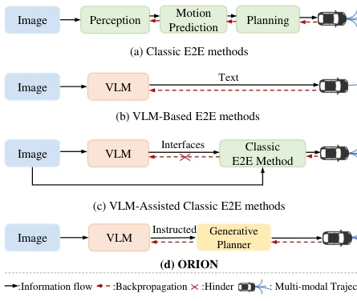
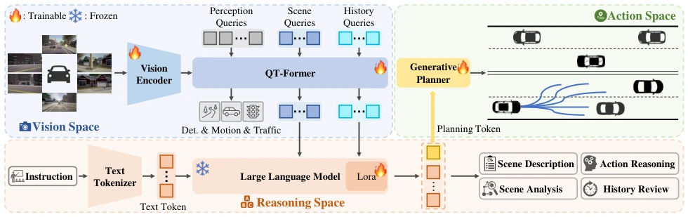
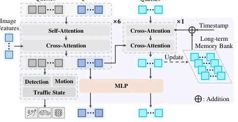
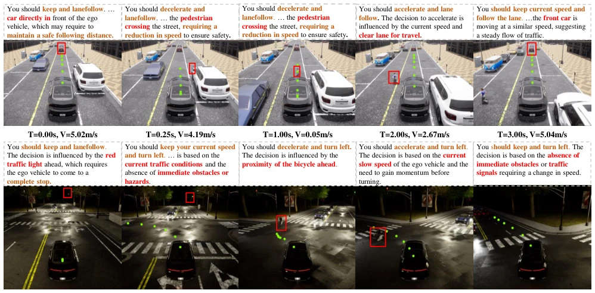
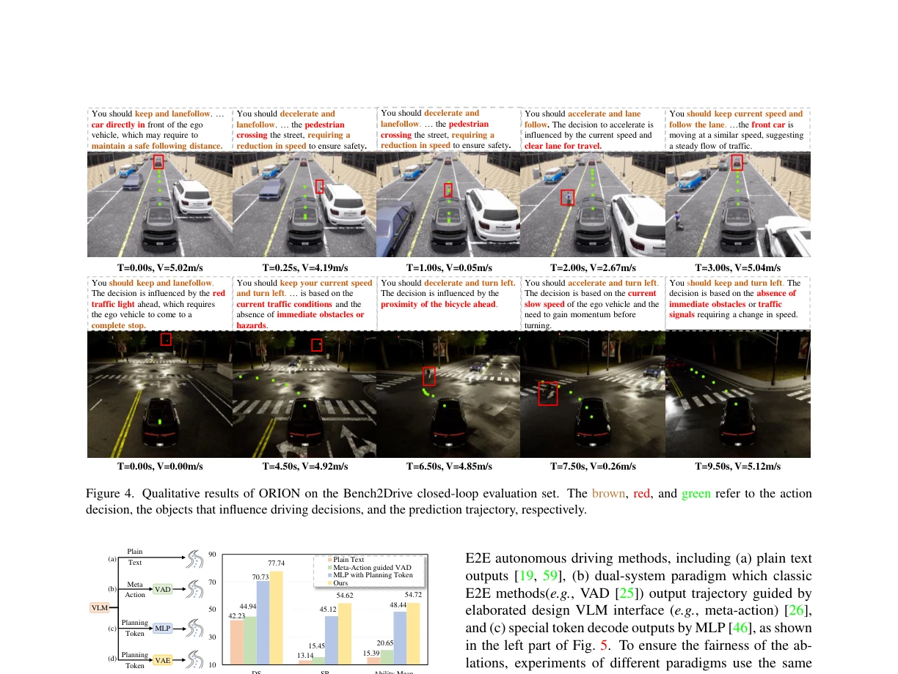

The name Orion is quite ambitious, implying omniscience and omnipotence like a deity? In reality, the core involves equipping the E2E model with a VLM as the 'brain' and employing a generative planner as the 'cerebellum' to output trajectories. On Bench2Drive, it indeed significantly outperformed DriveTransformer [24], with DS increasing by 14 points, but the cost of this 'full-stack' approach is the latency and VRAM consumption of VLM inference. For autonomous driving with stringent real-time requirements, deploying this model might necessitate a supercomputing center. However, its approach of aligning semantic reasoning with numerical trajectories effectively addresses the pain point of VLMs directly outputting text planning where 'numbers are calculated inaccurately' [13], offering a new pathway for VLM deployment in autonomous driving. It remains to be seen if it can pass the real-time hurdle before vehicle integration, as the paper itself acknowledges the computational complexity issue, suggesting future reliance on model compression techniques to salvage the situation.
End-to-end autonomous driving performs poorly in closed-loop evaluations, primarily due to a lack of causal reasoning capabilities [23]. Although existing VLM methods possess strong understanding capabilities, they are limited by autoregressive mechanisms and shortcomings in mathematical computation, resulting in poor performance when directly outputting text planning [13]. Other methods, such as DriveAdapter [21] or Senna [26], attempt to assist through meta-actions, but they decouple the reasoning and action spaces, hindering joint optimization. Existing methods like OmniDrive [59] attempt to connect visual reasoning spaces but are limited by token length. Orion aims to bridge the gap between the semantic reasoning space and the numerical trajectory space, achieving true unified optimization. It utilizes the world knowledge of VLMs to guide trajectory generation, solving decision-making challenges in closed-loop interactions.

Figure 1. The comparison of different E2E paradigms. Our ORION framework establishes the differentiable connection be- tween reasoning and action space via the generative planner.
The overall workflow is divided into vision encoding, QT-Former temporal aggregation, LLM reasoning, and a generative planner. First, the Vision Encoder extracts features. QT-Former utilizes historical queries and a memory bank to aggregate long-term context [59]. QT-Former interacts through scene queries and perception queries to extract key information, while maintaining a FIFO memory bank to store historical frame features. The LLM receives scene tokens and instructions, outputting planning tokens (Planning Token). Finally, the Generative Planner uses a VAE to map the LLM's reasoning tokens to a Gaussian distribution, aligning with the real trajectory distribution to decode multi-modal trajectories. The key innovation lies in using a VAE to bridge different modality spaces, rather than simple MLPs or text decoding, achieving unified distribution learning of the reasoning space and action space, thereby ensuring the multi-modal characteristics of trajectory generation.

Figure 2. The pipeline of our ORION, a holistic E2E framework aligning vision-reasoning-action space. It consists of three key com- ponents: a QT-Former to extract long-term context and link the vision space of the vision encoder and the reasoning space of LLM; the LLM for performing reasoning tasks and predicting a planning token; and a generative planner that bridges reasoning and action space for generating a multi-modal trajectory conditioned by the planning token.

Figure 3. The detailed architecture of QT-Former. It accepts di- verse queries and image features as inputs to detect traffic ele- ments, predict motion, and aggregate long-term vision context.
Evaluated on the Bench2Drive dataset using the CARLA simulator. Metrics include DS and SR. Orion achieved 77.74 DS and 54.62% SR, far surpassing DriveTransformer [24]. Ablation studies show the VAE planner outperforms Diffusion, and introducing historical memory in QT-Former significantly improves performance. The construction of the Chat-B2D dataset also validates the auxiliary role of VQA training on planning capabilities, demonstrating that multi-task training can simultaneously improve language and planning metrics. Furthermore, in the Multi-Ability test, Orion performed excellently in emergency braking and traffic sign recognition, but still has room for improvement in lane-changing decisions, reflecting the difficulty in capturing causal relationships.

Figure 4. Qualitative results of ORION on the Bench2Drive closed-loop evaluation set. The brown, red, and green refer to the action decision, the objects that influence driving decisions, and the prediction trajectory, respectively.

Figure 5. Advantages of the vision-language instructed action gen- eration. DS and SR denote Driving Score and Success Rate sepa- rately. VAD [25] is a classic E2E model.